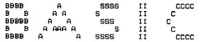
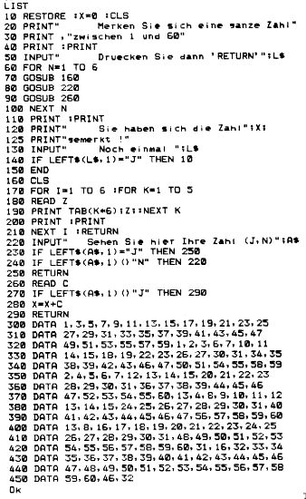

Nascom Journal |
4/80 |
Die Dioden sind Germanium-Dioden (z.B. AA 112). Mit Silizium-Dioden funktioniert die Schaltung nicht! Mit dem Umschalter kann man jetzt zwischen Nasbug T4 und NAS-SYS umschalten.
Zu beachten ist, daß während des Umschaltens der RAM-Inhalt zerstört werden kann, da der Prozessorstatus während des Schaltens ja zufällig ist. Wollte man das verhindern, müßte man eine Umschaltlogik wie auf der Umschaltkarte vorsehen. Allerdings wird man wohl nur sehr selten das gleiche Programm unter Nasbug und unter NAS-SYS laufen lassen. Mit dem gezeigten Verfahren erhält man zwei unabhängige EPROM-Blöcke à 4k. Dies kann auch ausgenützt werden, wenn man z.B. ASM/EPROM (von D000 bis DBFF) und NAS PEN (von B800 bis BFFF) auf der Nascom-2-Karte unterbringen will:


RAFI-Tastatur (HALL-Effekt-Tasten) z.T. schon ASCII-dekodiert, neu über 600.– jetzt für 150.– zu haben.
Lochstreifenstanzer mit Mechanik und einer Ansteuerelektronik 180.– 5,6,7,8-Kanal-Lochstreifen und Lochstreifenkarten (umstellbar)
Schneller Impulsverstärker aus der Kernforschung (Hämner-Verstärker) und Differenzierer. Röhren-Gerät 50.–, Transistorgerät 98.–
Zwei regelbare Hochspannungsnetzgeräte 0.5kV – 5kV ca. 1mA; Stück 35.–
Lochstreifenleser, superschnell (ca. 1500 Zeichen/s) fabrikneu, 5,6,7,8 – Kanal mit Service-Karten und allen Unterlagen 1250.–
M. Klein, __________ __, ____ Germersheim/Rhein
19-Zoll Gehäuse, blau, 6 Höheneinheiten, 60.– mit Tragegriffen, brauchbarer Zustand
Hans-Jörg Dietmann, ____________ __, ____ ___________ (oder Postfach ___, ____ ___________)
| Leerkassetten |
|
|
|
Speziell geeignet für Datenaufzeichnung. Hochwertiges BASF-Band.
Cassette 5-fach verschraubt. Cassette C10,d.h. 10
Minuten Spieldauer, daher besonders geeignet für
Mikrorechnerprogramme. |
||
|
10 Stk 20 Stk 50 Stk 100 Stk |
19.80 36.00 87.50 160.00 |
Jede Kassette mit selbstklebendem Aufkleber zum Beschriften. |
| Bei: |
M K – Systemtechnik __________ __ ____ Germersheim/Rhein Tel.: _____/____ |
|
| Seite 11 von 20 |
|---|